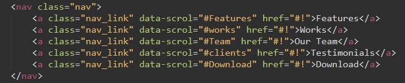
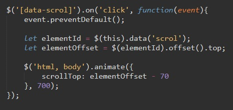

Рассмотрим сначала html код нашей навигации:
в каждый атрибут навигации (nav_link) мы добавили data атрибут (data-scrol) в который поместили селектор блока к которому будет происходить перемещение. т.е. у блоков к которым мы будем перемещаться должны стоять идентификаторы (id)
Рассмотрим код JavaScript
Здесь мы обращаемся к элементу с помощью jQuery через дата атрибут и обрабатываем событие click после которого вызывается функция.
внутри функции мы объявляем две переменные, которые получают значение дата атрибута. и высоту в пикселях от начала документа и до блока с идентификатором оторый записался в переменную elementId
Далее мы обращаемся через jQuery к тегу body и html и вызываем метод animate. Входным параметром этого метода является массив. Нам нужно здесь только значение scrollTop и помещаем в него значение расстояния от верха документа до необходимого блока минус 70 пикселей. скорость анимации будет проходить за 700 милисекунд.
Создаем якорную ссылку с ID = animation_link. Затем элементу куда будет цепляться якорь так же даем id = (например top).
Теперь по коду JS
$("#animation_link").click - С помощью Jquery привязываемся к нашей ссылке и создаем обработчик собития onclick
На это событие будет запускаться функция, которая привязывается с помощью $ (JQuery) к тегам html и body и вызывает метод animate
У этого метода два входных параметра: "что делать" и как "быстро"
scrollTop: $("#top").offset().top - эта строчка говорит о том, что с помощью $ привязываемся к элементу с ID = top (это наш якорь). Вызываем метод offset().top - что значит передвижение
1000- это скорость скрола